Overview
This is Effekseer plugin for UnrealEngine 4. With this plugin, you can play effects created with Effekseer on UnrealEngine 4.
Important notice
Please reimport model files if you upgrade it from 1.4
Environment
Version
UnrealEngine4.23 or later
Compiler
It is necessary to install a compiler suitable for the environment. For example, you need to install VisualStudio 2017 or 2019 on Windows.
Platform
Since platform-specific functions are not used, EffekseerForUnrealEngine4 works on most platforms.
Constitution
EffekseerForUE4 consists mainly of two components.
It is EffekseerSystemComponent and EffekseerEmitterComponent.
EffekseerSystem draws effects. Therefore, one component is absolutely necessary within the level.
EffekseerEmitterComponent creates and manipulates effects. It is necessary for each effect.
Besides these, theare are EffekseerEffect asset corresponding to Effekseer’s efkefc file, EffekseerModel asset corresponding to the Effekseer’s efkmdl file and EffekseerMaterial asset corresponding to the Effekseer’s efkmat file
There are also BP_EffekseerSystem and BP_EffekseerEmitter blueprints that makes it easier to use components.
Sample
EffekseerForUE4.uproject contains sample levels.
You can see that Effekseer’s effect is being played.
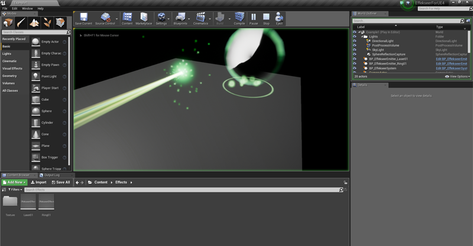
Installation and usage
This section explains how to install and use EffekseerForUE 4 in your project.
1.1. Copying directories
You copy the Plugins directory to the same directory as the uproject you created.
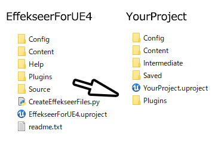
1.2. Adding C ++ code
You add some C ++ code to the project. It is no problem even if contents are empty.
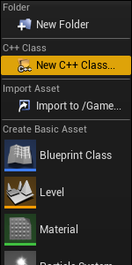
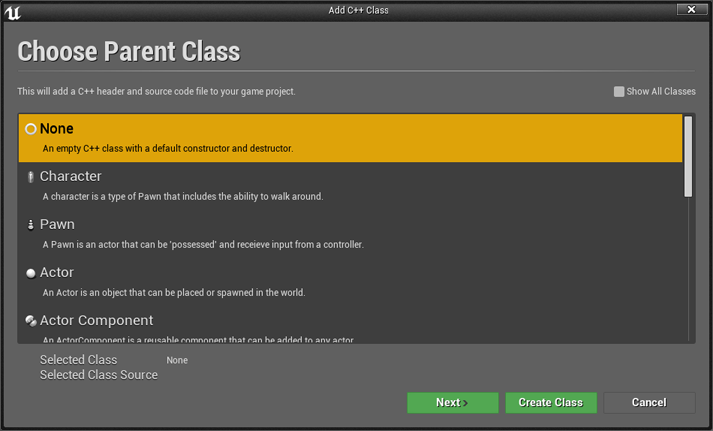
1.3. Enabling Plugin
You activate Plugin from UnrealEngine4. If it may be required to restart, you restart UnrealEngine 4.
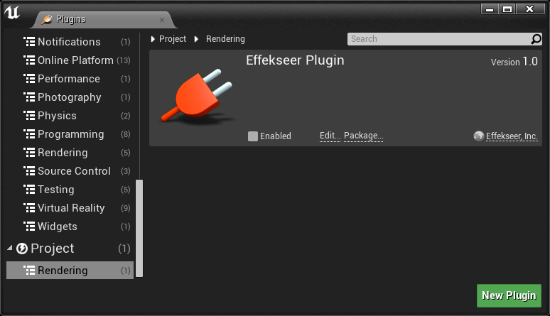
You may be asked to compile after rebooting. You compile the project.
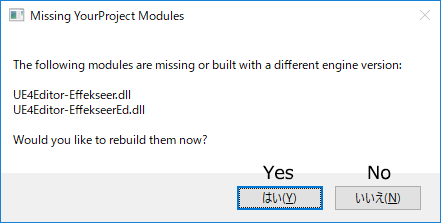
1.4. Adding a blueprint
You add BP_EffekseerSystem and BP_EffekseerEmitter to the level.
Since these are in the contents of the plugin, you make the contents of the plugin shown.
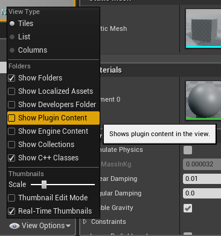
You move to the directory of the contents of the plugin.
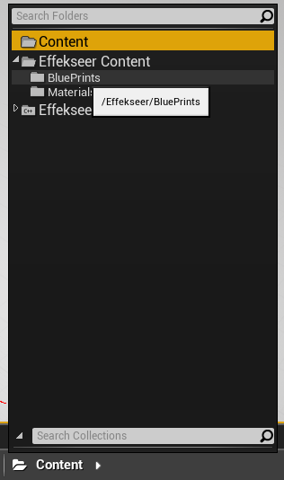
You add blueprints to the level.
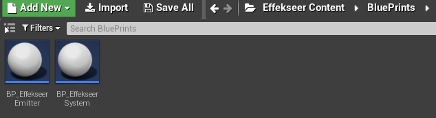
Currently, BP_EffekseerSystem must be located at position (0, 0, 0).
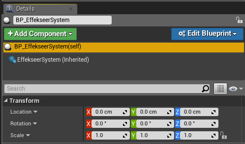
BP_EffekseerEmitter be located at the position where you want to display an effect.
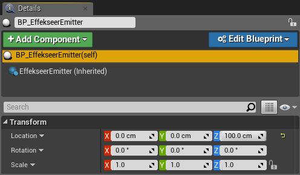
1.5. Adding assets
You add the efkefc files and textures output from Effekseer to the content.
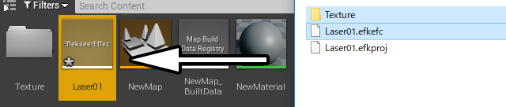
About the order of import
The order of importing is important. We recommend that you import textures, materials, and effects in this order. If you do not import them in this order, resources will not be assigned and the display may look strange.
If the effect does not have a texture or material assigned to it, right click on the Effect asset and click AssignResources.
. 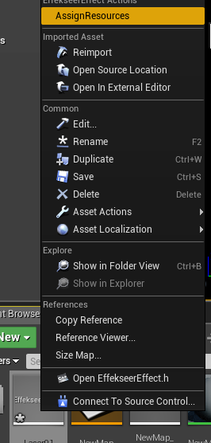
If no texture is assigned to the material, right-click on the EffekseerMaterial asset and Reimport it.
You assigns textures to the EffekseerEffect asset. Right-click the EffekseerEffect asset, and then run AssignResources.
Since the effect is often small, double-click the EffekseerEffect asset to set the scale. Let’s enter a large number to make the effect easier to see.
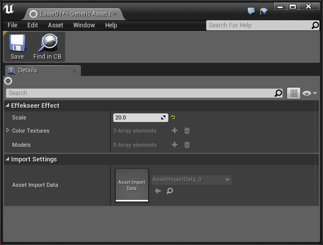
You select BP_EffekseerEmitter to display the component. You set the EffekseerEffect asset you just read into the EffekseerEmitter component.
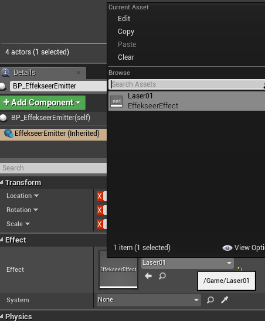
You turn on Auto Activate of the EffekseerEmitter component.
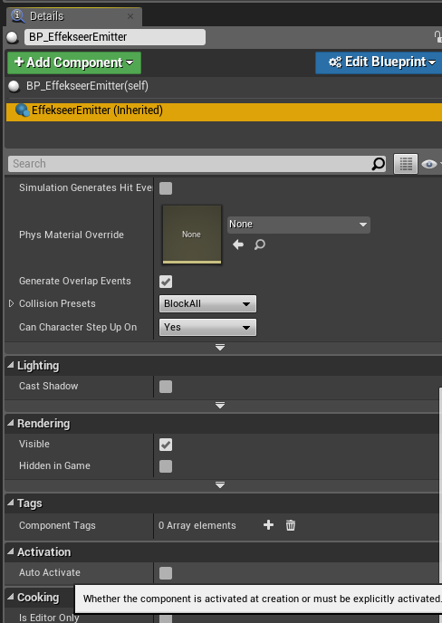
If you play it, you will see that the effect is displayed.
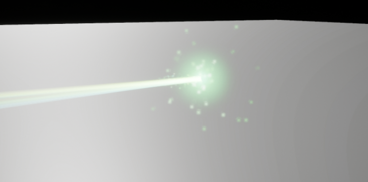
2.1. Components of Effekseer
You can also add Effekseer components to other actors. However, since EffekseerSystem is complicated, we recommend that you only use the EffekseerEmitter component.
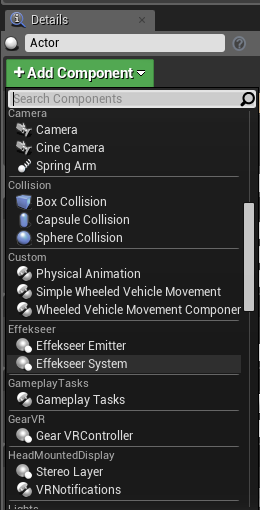
3.1. Animation Notifications
Effects can be played using Animation Notifications. Effects can be played at indicated time in Animation Sequence.
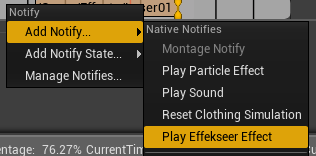
4.1 Network
- Only Windows
You can edit the playing effect in an application (game etc.) via the network from the outside when application is running.

You specify the port to be connected from Effekseer fo EffekseerSystemComponent. Make DoStartNetworkAutomatically On or execute StartNetwork in EffekseerSystemComponent. Then you can edit the effect from Effekseer. In order to edit the effect from another computer, it is necessary to open the port with the setting of the firewall. 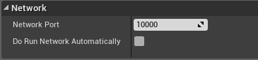
As a limitation, changes to blends or changes to unused images are not applied.
Caution
A greyscale image with alpha will display incorrectly.
Limitation
Subtraction, and distortion are different from Effekseer.
The normal map to the model does not apply.
If a large number of models are drawn, the speed tends to decrease.
Does not support culling settings.
Materials do not have depth ignoring settings.
Todo
Match of display of Effekseer and UnrealEngine4 of subtraction, distortion
Implementation of model normals
Improved ease of use
Release note
1.52m or later
Please read it.
1.52k (2020/08/13)
- Fixed a bug where R and G of Texture Sample node were switched.
- Fixed a bug where a material compile error would occur under certain circumstances
- Fixed a bug where lighting parameters were not supported
- Fixed a bug that prevented re-importation.
- Fixed a bug where images of normals could not be loaded with materials.
- Supports material wrapping and repeats
- Fixed a bug that Sampler is not supported in a material
- Fixed a bug where VertexColorNode return Vector4
- Update Effekseer to 1.52k
1.52j (2020/08/02)
- Update Effekseer to 1.52j
1.52i (2020/07/30)
- Update Effekseer to 1.52i
1.52h (2020/07/08)
- Update Effekseer to 1.52h
- Fixed a bug that Step node behavior is different from Effekseer Material
1.52g (2020/06/09)
- Support 4.25
- Update Effekseer to 1.52g
1.52b (2020/05/02)
- Fixed a bug where particles are not shown with Line of SpawnMethod
1.52a (2020/04/28)
- Fixed a bug that a behavior of rotated billboard is something wrong when an angle is about 90 degree
1.52 (2020/04/26)
- Support 4.25 Preview7
- Fixed a bug that caused a crash in rare cases.
1.50 (2020/03/18)
- Support 4.24
- Support Material partially
- Change default parameter (AutoActicate, Scale)
1.43f (2019/09/16)
- Support 4.23
1.43e (2019/07/15)
- Resupport 4.21 (Compile error has been caused in 4.21)
1.43d (2019/07/11)
- Fixed a bug that the application is crashed when a model is rendered in 4.22
1.43b (2019/05/01)
- Supported 4.22
1.43 (2018/03/02)
Supported 4.21
Add network functions
1.40 (2018/09/12)
Supported 4.20
Add functions(Playback speed and color settings)
1.31 (2017/11/20)
Supported Animation Notifications
Fixed many bugs
1.30 (2017/11/01)
- First release
Lisence
The MIT License (MIT) Copyright (c) 2011 Effekseer Project Permission is hereby granted, free of charge, to any person obtaining a copy of this software and associated documentation files (the "Software"), to deal in the Software without restriction, including without limitation the rights to use, copy, modify, merge, publish, distribute, sublicense, and/or sell copies of the Software, and to permit persons to whom the Software is furnished to do so, subject to the following conditions: The above copyright notice and this permission notice shall be included in all copies or substantial portions of the Software. THE SOFTWARE IS PROVIDED "AS IS", WITHOUT WARRANTY OF ANY KIND, EXPRESS OR IMPLIED, INCLUDING BUT NOT LIMITED TO THE WARRANTIES OF MERCHANTABILITY, FITNESS FOR A PARTICULAR PURPOSE AND NONINFRINGEMENT. IN NO EVENT SHALL THE AUTHORS OR COPYRIGHT HOLDERS BE LIABLE FOR ANY CLAIM, DAMAGES OR OTHER LIABILITY, WHETHER IN AN ACTION OF CONTRACT, TORT OR OTHERWISE, ARISING FROM, OUT OF OR IN CONNECTION WITH THE SOFTWARE OR THE USE OR OTHER DEALINGS IN THE SOFTWARE.